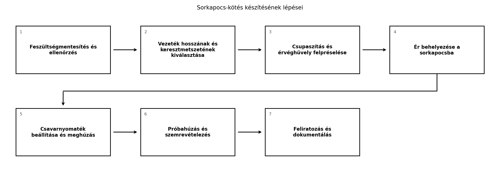

Statikus változat (mint a PDF-ben)
Egy lakáselosztóban a szerelő azt látja, hogy az egyik kismegszakító kivezetése körül barna, égett szagú a szigetelés. A csavar alól kicsúszott vékony rézszálak feketére oxidálódtak. A konyhai sütő áramköre időnként leold, a csatlakozó sorkapocs felforrósodik. Nem a kismegszakító rossz: a kötés volt laza.
A villamos szerelésben a kötés az a pont, ahol a legkisebb hiba is a legnagyobb kárt okozhatja. A rossz érintkezés ellenállása megnő, a rajta eső teljesítmény hővé alakul, a hő pedig oxidációt, további ellenállás-növekedést, szigeteléskárosodást és akár tüzet okoz. A jó kötés nem „szorosra húzott csavar” – hanem tiszta felület, megfelelő vezető-előkészítés, előírt nyomaték és ellenőrzés.

Definíció. A villamos kötés két vagy több vezető, illetve vezető és készülék-kapocs olyan fémes összekapcsolása, amely tartósan kis átmeneti ellenállást biztosít, és elviseli a várható mechanikai, hő- és rezgésigénybevételeket.
Definíció. A sorkapocs olyan szerelvény vagy készülék-rész, amely egy vagy több vezető villamos és mechanikai csatlakoztatására szolgál. A sorkapocs két alapfeladata: a vezetőt rögzítse, és az áramot kis ellenállással átvezesse.
A gyakorlatban három fő sorkapocs-típust különböztetünk meg:
A csavaros sorkapocsnál a csavar nem közvetlenül a vezető érre nyom, hanem rendszerint egy nyomólemezen vagy emelőbetéten keresztül szorítja le az eret. A csavar anyaga általában acél, a kapocstest sárgaréz vagy más rézötvözet. A nyomólemez azért fontos, mert elosztja a csavar nyomását, és nem vágja el a vékony szálakat.
Előnye: nagy szorítóerő, széles
keresztmetszet-tartomány, a kötés könnyen ellenőrizhető és
újrahúzható.
Hátránya: hőciklusok és rezgések hatására idővel
lazulhat, ezért időszakos ellenőrzést igényel. Túlhúzásnál a menet vagy
a vezető tönkremehet.
A rugós sorkapocsban a vezetőt feszített acélrugó szorítja a rézsínhez. Két gyakori változata a tolórugós (push-in) és a karos vagy szerszámmal nyitott rugós kapocs. A vékony, hajlékony vezetőt gyakran még itt is ajánlott érvéghüvellyel ellátni, hogy a szálak ne terüljenek szét.
Előnye: rezgésálló, hőciklusoknál is tartja a
szorítóerőt, gyorsan szerelhető.
Hátránya: a visszanyitás és az újbóli bekötés
kényesebb, a kapocs befogadóképessége és a szerszámigény típusfüggő.
A szorítós kötőelemek közé tartoznak például az emelőkaros, dugaszolható kötőelemek és a gyorscsatlakozók. A karos típusnál a szerelő a kart nyitja, behelyezi a vezetőt, majd visszazárja a kart; a rugó így szorítja le az eret. A dugaszolható gyorscsatlakozók az épületvillamossági gyakorlatban is elterjedtek, de csak a gyártó által megadott vezetőfajtákra és keresztmetszetekre használhatók.
A négy kivitel belső felépítését az alábbi sematikus metszet hasonlítja össze, közös számozással: a szigetelő ház (1), az áramvezető sín (2), a vezető (3), a szorítóelem (4) és a működtető elem (5). Csavaros kapocsnál (a) a csavar egy kengyelt húz fel, amely a vezetőt a sínhez szorítja; húzórugós kapocsnál (b) a rugót csavarhúzóval kell nyitni; bedugós (push-in) kapocsnál (c) a tömör vagy hüvelyezett ér egyszerűen betolható, kioldani a nyitógombbal lehet; emelőkaros összekötőnél (d) a kar nyitja és zárja a rugót.
Mindegyik típusnál a szorítóelem a vezetőt a sínhez nyomja – a kapocs minősége ezen a felületen dől el. A rugós és a bedugós kapocs szorítóereje nem függ a szerelőtől, a csavarosé viszont a meghúzási nyomatéktól. A HTML-kiadásban a részekre mutatva mind a négy kapocsban egyszerre kiemelődik az azonos funkciójú elem.
Figyelem. A „csak összecsavarom a vezetékeket” eljárás nem kötés. Az ilyen csavart, menetirány szerint nem rendezett, szigetelőszalaggal betekert kötés idővel melegszik, és nem biztosít védővezető-folytonosságot sem.
A régi épületekben még gyakori alumínium vezeték. Az alumínium felületén azonnal vékony, nagy ellenállású oxidréteg képződik; az anyag hő hatására jobban tágul, mint a réz, és mechanikai terhelés alatt „kúszik”, vagyis lassan deformálódik.
Szabály. Alumínium és réz vezetőt közvetlenül, sima acélcsavarral összekötni tilos. A két fém eltérő elektrokémiai potenciálja és hőtágulása miatt a kötés meglazul, korrodál és felforrósodik.
Helyes megoldás:
Alumínium bekötésénél a csavarnyomaték és az újrahúzás különösen fontos, mert a kúszás miatt a kezdetben jónak tűnő kötés néhány hőciklus után meglazulhat. A pontos nyomatékot a gyártói adatlap adja meg; régebbi szereléseknél az értékeket ellenőrizni kell.
A kötés minőségét nem a „jól meghúzom amíg bírja” elv határozza meg, hanem a gyártó által megadott nyomaték. A nyomatékot newtonméterben () adják meg.
Szabvány. A készülékek és sorkapcsok kapocsnyomaték-értékeit a gyártói adatlap és a vonatkozó termékszabványok tartalmazzák (pl. MSZ EN 60947, MSZ EN 60998, MSZ EN 61439, MSZ EN 60204-1 – ellenőrizendő: a pontos termékszabvány és a gyártói táblázat). A szerelőnek az előírt nyomatékot be kell tartani.
Következmények:
Példa.
Egy moduláris kismegszakító kapcsa a gyártó szerint
nyomatékkal húzandó meg (szemléltető érték; ellenőrizendő: a
konkrét készülék gyártói adatlapja). A szerelő először
értékkel húz; az érvéghüvelyes vezető fémesen nem fekszik fel teljesen.
Ezután nyomatékkulccsal beállítja a
értéket. A kapocsrés nyomatékkulcs-kattanás után pontosan zár, a vezető
nem mozdul. A későbbi hőkamerás ellenőrzésen a kapocs
hőmérséklet-emelkedése a szomszédos kötésekkel azonos.
A moduláris készülékek és sorkapcsok kis csavarjaihoz a nyomatékkulcs helyett többnyire nyomatékcsavarhúzót használunk. Részei az alábbi ábrán: a cserélhető, szigetelt penge (1), a pengebefogó (2), a kioldó mechanizmus (3), a nyomatékskála (4), a beállító (5), a rögzítő zár (6) és a markolat (7). Használata négy lépés: (1) a nyomatékot a gyártói adatlapról veszed, (2) beállítod és rögzíted, (3) a pengét merőlegesen, a csavarba nyomva egyenletesen húzod, (4) a kioldásnál (kattanás vagy átcsúszás) megállsz, és dokumentálod az értéket.

A kioldás után ne húzz rá még egyszer „biztos, ami biztos” alapon: ez már túlhúzás. A nyomatékszerszám pontosságát a gyártó által előírt időközönként ellenőriztetni kell. A HTML-kiadásban a részek kiemelhetők, a négy lépés pedig egyenként lejátszható.
Újrahúzás
A rendszeres karbantartás során a csavaros kötéseket ellenőrizni kell.
Nem „vakon” kell mindent meghúzni, hanem
Figyelem. A gyártó által megadott nyomatékot nem szabad túllépni, mert az alumínium és a hajlékony réz könnyen deformálódik. A régi kötésekben a csavar újrahúzásakor ellenőrizni kell, hogy az ér nem sérült-e.
Átmeneti ellenállás mérése. Négyvezetékes (Kelvin-) mikroohmmérővel, vagy ismert egyenárammal (pl. 10 A) és a kötésen mért feszültségeséssel: . Összehasonlítási alap: ugyanolyan hosszú ép vezetőszakasz ellenállása (pl. réz, : ). A jó kötés ennek nagyságrendjében van, a tízszeres eltérés hibát jelez (ellenőrizendő: gyártói/szabványos határérték). A kézi multiméter -os felbontása és a mérőzsinór ellenállása mellett a néhány mΩ–néhány tized Ω nagyságú átmeneti ellenállás nem mutatható ki, ezért a „folytonosság” nem minősíti a kötést. A mérést feszültségmentesített, az öt biztonsági szabály szerint biztosított berendezésen, vagy a mikroohmmérő gyártójának utasítása szerint végezd.
A kész kötés ellenőrzésének három szintjét az alábbi ábra mutatja: (a) szemrevételezés – a szigetelés a házig ér, nincs elszíneződés, a jelölés olvasható, nincs kilógó szál; (b) húzópróba – kézzel, tengelyirányban; (c) szükség esetén négyvezetékes átmenetiellenállás-mérés, amelynél az áramot a külső, a feszültséget a kötés két oldalán lévő belső pontokon vezetjük be, illetve mérjük, így a mérőzsinórok ellenállása nem torzítja az eredményt.

Mindhárom ellenőrzést feszültségmentes, leválasztott állapotban végezd. A HTML-kiadásban az ellenőrzési módok egyenként, nagyítva jeleníthetők meg.
A kötés melegedését terhelés alatt hőkamerával lehet kimutatni. A hőkamera a felületek hőmérséklet-eloszlását jeleníti meg. A módszer alkalmas a laza, nagy átmeneti ellenállású kötések megtalálására.
Biztonsági korlát. A nyitott, feszültség alatti kapcsolószekrény hőkamerás vizsgálata feszültség közelében végzett munka: csak jogosult személy végezheti, a burkolatok és fedések megbontása nélkül, ahol lehet ellenőrzőablakon át, megfelelő egyéni védőfelszereléssel (ellenőrizendő: MSZ EN 50110-1 és a hazai üzemeltetési szabályok). A tanuló tanműhelyben vagy oktató felügyeletével, törpefeszültségű modellen gyakorolhat.
Gyakorlat.
A mérést üzemi terhelés alatt, lehetőleg azonos árammal
kell végezni. A vizsgált kapcsolószekrényben a kötések hőmérsékletét a
környezeti hőmérséklethez viszonyítjuk. A gyanús kötés jellemzője:
hőmérséklet-különbség
()
a szomszédos, azonos áramú kötésekhez képest. Néhány fokos eltérés még
normális lehet; tíz-húsz fokos eltérés és a láthatóan forró kapocs
azonnali javítást igényel. (ellenőrizendő: az adott berendezésre
és környezetre vonatkozó határértékek, MSZ EN 61439 / MSZ EN 60204-1
szerint)
Megjegyzés. A hőkamerás vizsgálat tájékoztató jellegű: nem helyettesíti a nyomatékellenőrzést, a szemrevételezést és a csatlakozások feszültségmentes állapotú vizsgálatát. A hőkamera felbontása, a tárgy emissziós tényezője és a távolság befolyásolja a mért értéket.
A forrasztás a finom elektronikai szerelésekben alapvető, de az erősáramú, hálózati feszültségű vezetékek bekötésére általában nem megfelelő. A forraszanyag lágy, mechanikailag gyengébb, mint a csavar vagy a rugó által létrehozott szorítás; hőciklusnál elöregedhet, megrepedhet, és rossz esetben a kötés kienged.
A forrasztás alapelvei, ha az adott feladat megengedi:
Egy társasházi lakáselosztó felülvizsgálatán a szerelő a hőkamerán azt látja, hogy a C16-os kismegszakító felső kivezetése mintegy -nel melegebb a szomszédos kapcsoknál. A terhelés mindkét áramkörön azonos, körülbelül . A feszültségmentesítés után kiderül, hogy a kapocs csavarja negyed fordulatot lazult. A szerelő megbontja a kötést: az érvéghüvely felülete helyenként barna, a rézér kissé elszíneződött. Megtisztítja a vezetéket, új érvéghüvelyt húz, majd nyomatékkulccsal a gyártó által megadott értékre húzza a kapcsot. A visszakapcsolás után az áramkör terhelését visszaállítja, a hőkamerás kép ekkor már nem mutat hőmérsékleti eltérést. Ezt a mérést jegyzőkönyvben rögzíti.
Tünet. Egy ipari csarnokban a szalagmeghajtó motor időnként leáll, a hőkioldó néha kiold, a motor árama pedig a karbantartó mérésekor (amikor a kötés éppen érintkezett) nem haladta meg a beállított értéket. A karbantartó a motorkapocsdobozban enyhe égett szagot érez.
Hipotézisek:
Mérés.
Feszültségmentesítés után a szerelő méri a motor tekercseinek
ellenállását: mindhárom fázis azonos, a szigetelési ellenállás jó.
Ezután megvizsgálja a sorkapcsokat: az U1 kapocs csavarja alatt a
vezetőér elszíneződött, a csavar meglazult. A kábel köpenye ép.
Ok.
A laza kötés fáziskimaradást okozott. A motor két fázison üzemelve
túlmelegszik: fáziskimaradáskor a két megmaradt fázis árama megnő (kb.
1,5–1,7-szeresére), illetve a fáziskiesés-érzékeny hőkioldó a
fázisáramok különbségére is old, ezért időnként lekapcsol. A laza
kapocsnál keletkező ív és hő barna nyomot hagyott.
Javítás.
A sérült vezetővéget levágja, a kábelt újra előkészíti, érvéghüvelyt húz
rá, majd a kapcsot a gyártó által megadott nyomatékkal húzza meg. A
motor próbaüzeme után terhelés alatt ellenőrzi a kapcsok hőmérsékletét
hőkamerával, és ellenőrzi a hőkioldó beállítását (a motor névleges
áramára).
Megelőzés.
A rezgésnek kitett gépeknél rögzített kötéshúzási tervet kell készíteni,
rendszeres időközönként nyomatékellenőrzést tartani, és a jeleket –
elszíneződés, szag, meleg kapocs – azonnal megvizsgálni.
Cél. Tanműhelyi környezetben tanuló gyakorolja a vezető előkészítését, érvéghüvely szerelését és a sorkapocs bekötését.
Eszközök és anyagok. Blankoló (csupaszoló) fogó, krimpelő (préshüvely-) fogó, érvéghüvelyek, sorkapocs, nyomatékkulcs, multiméter, szemrevételező tükör, vezetékek, törlőkendő, hőkamera vagy infrahőmérő (ha rendelkezésre áll).
Biztonsági korlát. A feladat tanműhelyi (törpefeszültségű) környezetre vagy jogosult oktató felügyeletére vonatkozik; hálózati feszültségen önállóan ne végezd.
Az 5–8. lépés eredményét az alábbi ábra szerint ellenőrizd: a helyes kötésnél az érvéghüvely teljes hosszában a nyomólemez alatt van, és a szigetelés a kapocs házáig ér. Mellette az öt leggyakoribb hiba: túl hosszú csupaszítás, a kapocsba szorult szigetelés, érvéghüvely nélküli hajlékony ér, a nyomólemez fölé dugott vezető és a túlhúzott csavar.

A túlhúzott és a laza csavar kívülről gyakran egyformán néz ki; ezért a nyomatékot szerszámmal kell beállítani, a próbahúzást pedig minden vezetőn el kell végezni. A HTML-kiadásban a helyes és a hibás változatok egyenként, nagyítva jeleníthetők meg.
1. Hiba: túl hosszú csupaszítás.
A szigetelésből kilógó csupasz ér a szomszédos kapocshoz érhet, zárlatot
vagy földzárlatot okoz.
Helyes: a csupaszítási hossz legyen a kapocs által
megadott, a szigetelés a kapocstestig érjen.
2. Hiba: hajlékony vezeték érvéghüvely nélkül.
A csavar vagy rugó alatt a vékony szálak szétterülnek, egyes szálak
elpattannak, a kötés melegszik.
Helyes: hajlékony vezetékre a gyártó által jóváhagyott,
megfelelő méretű és hosszúságú érvéghüvelyt kell préselni.
3. Hiba: A csavart „ahogy bírja” meghúzás.
A túlhúzás elvágja az eret, a laza kötés melegszik.
Helyes: nyomatékkulcsot kell használni, és a gyártó
által megadott értéket be kell tartani.
4. Hiba: alumínium és réz közvetlen
összekötése.
A két fém korróziója és eltérő hőtágulása miatt a kötés meglazul.
Helyes: Al/Cu sorkapocs vagy bimetál kötőelem
használata.
5. Hiba: forrasztott erősáramú kötés csavaros
kapocsban.
A forraszanyag a csavar alatt kifolyik, a kötés hőciklusnál
meglazul.
Helyes: erősáramú kötéseket szorítással kell készíteni;
a forrasztott kötést csak az arra alkalmas elektronikai környezetben
szabad használni.
1. feladat (A) Sorolja fel a csavaros, a rugós és a szorítós sorkapcsok egy-egy jellemzőjét, előnyét és hátrányát.
2. feladat (A) Magyarázza el, miért kell hajlékony vezetékre érvéghüvelyt préselni a sorkapocsba kötés előtt.
3. feladat (B) Egy kismegszakító kapocsnyomaték-adata a gyártói táblázat szerint (szemléltető érték; ellenőrizendő: a konkrét készülék gyártói adatlapja). A szerelő nyomatékkulcs nélkül, kézzel „csak annyira” húzza meg. Írja le, milyen hibákhoz vezethet ez, és milyen két lehetséges ellenőrzési módszerrel lehet utólag kimutatni a rossz kötést.
4. feladat (B) Sorolja fel a hőkamerás ellenőrzés előkészítésének és végrehajtásának lépéseit egy kapcsolószekrényben. Melyik mérési körülmény befolyásolja a hőkamerás képet?
5. feladat (C) Egy régi lakásban alumínium vezetékek vannak, és a konyhai áramkört réz vezetékre cserélik. Milyen kötőelemeket és munkalépéseket alkalmazna az átmeneti pontokon, hogy a kötés megbízható legyen? Sorolja fel a lehetséges veszélyes hibákat.
6. feladat (D) A tanműhelyben egy elosztómodellen a C16-os kismegszakító kivezetése barnára égett, a csavar negyed fordulatot lazult. Írja le a javítási folyamatot a feszültségmentesítés öt biztonsági szabályát betartva, a kötés elkészítésétől a visszakapcsolás utáni ellenőrzésig.
1. feladat (A)
Csavaros: nagy szorítóerő, széles keresztmetszet-tartomány, könnyű
ellenőrizhetőség; hátránya, hogy hőciklusnál és rezgésnél lazulhat.
Rugós: rezgésálló, gyors, hőciklust elvisel; hátránya, hogy a
visszanyitáshoz szerszám kellhet és kisebb a befogadási tartomány.
Szorítós/gyorscsatlakozó: gyors, kényelmes, de csak a gyártó által
megadott vezetőtípushoz és keresztmetszethez használható, a rugószelepek
kényesek a túlzott erőre.
2. feladat (A)
A hajlékony vezető sok vékony szálból áll. Érvéghüvely nélkül a szálak a
csavar vagy a rugó alatt szétterülnek, egyes szálak eltörnek, a kapocs
nem szorítja le a teljes keresztmetszetet, az átmeneti ellenállás megnő.
Az érvéghüvely összefogja a szálakat, egyenletes felületet ad a
szorításnak, és védi a szálakat a sérüléstől.
3. feladat (B)
Kézi „csak annyira” húzással a kötés lehet túl laza (melegszik, leoldás,
ívképződés) vagy túl szoros (a csavar elvágja a szálakat, a menet
deformálódik, a kötés később laza lesz). Utólagos kimutatás:
hőkamerás ellenőrzés terhelés alatt, illetve
feszültségmentesítés után nyomatékellenőrzés és
szemrevételezés. A pontos nyomatékot a gyártó adja meg, ezért a
nyomatékkulcs használata elengedhetetlen.
4. feladat (B)
Lépések: terhelés alatt, azonos áramú kötések összehasonlítása; a
környezeti hőmérséklet rögzítése; a kamera emissziós beállítása és a
mérési távolság; a kapcsolószekrény ajtajának kinyitása előtt a
munkavédelmi szabályok betartása. A mérést befolyásolja: a felület
emissziós tényezője, a visszaverődő hő, a távolság, a környezeti
hőmérséklet, a szellőzés, a terhelés eloszlása. Jellemző hiba, ha a
mérést terhelés nélkül végzik, és a laza kötés nem melegszik.
5. feladat (C)
Az átmenetekhez Al/Cu sorkapcsot vagy bimetál kábelsarut választanék. A
munkalépések: feszültségmentesítés; a vezetők tisztítása; az oxidréteg
eltávolítása; oxidgátló paszta felvitele a gyártó szerint; a kötés
gondos előkészítése; a gyártó által megadott nyomatékkal való húzás; a
kötés ellenőrzése, későbbi időpontban újrahúzás. Veszélyes hibák:
közvetlen Cu–Al összekötés, túlhúzás, paszta elhagyása, érvéghüvely
hiánya, laza kötés.
6. feladat (D)
A javítás lépései:
1. Lekapcsolás.
2. A visszakapcsolás elleni biztosítás (zár, tábla).
3. Feszültségmentesség ellenőrzése minden fázison, nullán és
PE-en.
4. Földelés és rövidre zárás: kisfeszültségű végáramkörön a
munkautasítás szerint (általában nem szükséges, ezt indokolni
kell).
5. Szomszédos feszültség alatti részek lefedése, ha vannak.
6. A sérült vezetővég levágása, újra csupaszítás, érvéghüvely
húzása.
7. A kapocs megtisztítása, a csavar és a nyomólemez ellenőrzése.
8. Bekötés és a gyártói nyomatékkal való meghúzás.
9. Próbahúzás, szemrevételezés, folytonosságmérés.
10. Visszakapcsolás, terhelés alatti hőkamerás ellenőrzés (jogosult
személy, a biztonsági korlát szerint).
11. Jegyzőkönyvben a munka dokumentálása.
A villamos kötés a berendezés mechanikai és villamos szempontból legsérülékenyebb pontja. Csavaros, rugós és szorítós sorkapcsok közül a feladat és a gyártói előírás alapján kell választani. Hajlékony vezetőhöz érvéghüvely kell; alumínium és réz közvetlen összekötése tilos, Al/Cu kötőelemre van szükség. A csavart mindig a gyártó által megadott nyomatékkal kell meghúzni, lehetőleg nyomatékkulccsal. A laza kötés melegszik, a túlhúzott kötés deformálódik. A kész kötést szemrevételezéssel, próbahúzással és nyomatékellenőrzéssel, kétség esetén mikroohmmérős átmeneti ellenállás-méréssel, üzem közben hőkamerás vizsgálattal ellenőrizzük; a folytonosságmérés csak a bekötés helyességét igazolja, a kötés minőségét nem. A forrasztás erősáramú kötésekhez nem megfelelő. Továbbvitt eredmény. A kötések jelölése, nyomatéknaplója és dokumentálása a Jelölés, feliratozás, rendrakás és dokumentálás a munkahelyen alfejezetben tér vissza; az itt tanult ellenőrzési lépéseket a Lakáselosztó építése és bekötése és a Hibakeresés épületvillamossági modelleken gyakorlatokon alkalmazzuk.
A szöveg a magyarországi és európai villamos szerelési gyakorlatra épül. A kapcsokra és kötőelemekre vonatkozó szabványok: MSZ EN 60947, MSZ EN 60998, MSZ EN 61439, MSZ EN 60204-1, MSZ HD 60364 sorozat. A konkrét csavarnyomaték-értékek és a hőkamerás hőmérséklet-különbség-határok tájékoztató jellegűek; a pontos értékeket a gyártói adatlapok és a hatályos szabványok tartalmazzák, ezért a kivitelezés előtt ellenőrizni kell.